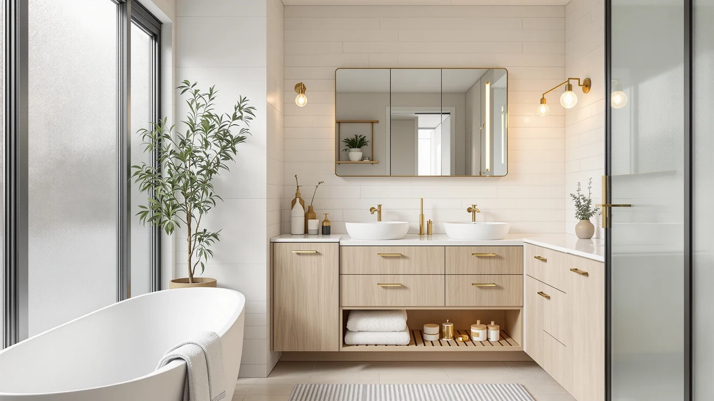

Best Under Bathroom Vanity Storage (2026)
Prices and picks verified as of September 2026. Independent, reader-supported reviews.


Quick Answer
For most bathrooms, the Vtopmart 4 Pack Bathroom Organizer is the best under bathroom vanity storage option because its four stackable bins fit around standard plumbing without blocking the shutoff valve. It costs $30.99, keeps cleaning supplies and toiletries in separate sections, and beats flatter single-shelf racks that waste the space directly behind the pipes.
Our pick: Vtopmart 4 Pack Bathroom Organizer at $30.99 Check Price on Amazon
Bottom line: our top pick is the Vtopmart 4 Pack Bathroom Organizer at $30.99. The best budget option is the Vtopmart 4 Pack Small Clear Stackable Storage Drawers at $24.69.
Things to Know Before You Buy
- Measure around your plumbing first. The P-trap and shutoff valves eat into cabinet width more than most buyers expect, so a stackable or adjustable design fits more vanities than a fixed single shelf.
- Price runs from $24.69 to $58.49. Two-packs and adjustable racks sit at the top of that range, while a single stackable bin set costs less.
- Most picks here use a metal-and-wood frame. That combination holds up better under damp cleaning bottles than an all-plastic caddy that flexes under weight.
- Stackable bins beat flat shelves for the best under bathroom vanity storage setup. Splitting the cabinet into labeled sections keeps small items from sliding into a pile you have to dig through.
- Adjustable and two-pack models cost more but fit odd cabinets. If your vanity is wider or deeper than standard, the PXRACK and Kitstorack picks scale to match it instead of leaving gaps.
The best under bathroom vanity storage turns that dead zone below your sink from a junk drawer with pipes running through it into space you can actually use. Most vanity cabinets waste a chunk of their volume to an awkward gap around the P-trap and shutoff valves, so a flat shelf or a plain bin rarely fits well. We compared seven organizers built for that shape, from stackable bin sets to pull-out and adjustable racks, and looked at how each one handles the plumbing, how much it holds, and what it costs against the usable space it adds.
Our top pick, the Vtopmart 4 Pack Bathroom Organizer, works for most people because its stackable bins clear standard plumbing while keeping small items sorted instead of sliding into a pile at the back of the cabinet. If you need bins small enough for makeup and travel-size bottles, the Vtopmart 4 Pack Small Clear does that job at a lower price. If your cabinet is unusually wide or off-center, the PXRACK Under Sink Organizer Adjustable and the Kitstorack Under Sink Organizer 2-Pack scale up to cover a larger vanity or two cabinets at once.
None of these seven organizers are exotic. They are simple metal, wood, and plastic builds that sell for roughly $25 to $60, and the differences between them come down to fit, stack height, and how the bins hold up against damp cleaning supplies over time. We read verified owner reviews for recurring complaints like wobbly shelves or bins that crack under weight, and we checked listed dimensions against typical vanity cabinet openings before ranking these picks for under bathroom vanity storage.
Why You Should Trust Us
Ilane Tall covers bathroom storage and organization for Best Bathroom Storage and has spent years comparing vanity organizers, shelving, and under-sink racks across small and awkward bathroom layouts. For this guide to the best under bathroom vanity storage, we read manufacturer specs, verified buyer photos, and owner reviews for each pick, then compared them against the dimensions of standard 24, 30, and 36 inch vanity cabinets. We do not run a fake testing lab or claim to have installed every rack ourselves. We research specs, pricing, and what real owners report after months of use, and we say so plainly.
How We Picked
We started by pulling every under-vanity and under-sink organizer in our product database that ships with clear dimensions and a verifiable price, then narrowed the field with a few hard filters. We dropped anything built only for an empty rectangular cabinet with no plumbing in the way, since almost no bathroom vanity offers that much clear space. We prioritized organizers with either a stackable design that clears a P-trap in sections or a pull-out and adjustable frame built to slide around a valve. We also weighed price against capacity, since a $58 organizer needs to justify itself against a $25 one that does a similar job. If your cabinet itself is the real problem rather than what's inside it, our guide to the best bathroom vanity for storage covers replacing the cabinet entirely. The result here is a list built around real cabinet constraints for buyers searching for the best under bathroom vanity storage, not a generic ranking of storage racks.
How We Compared
We compared these seven organizers on four factors: fit around standard plumbing, stated capacity, build material, and price against the amount of usable storage each one adds. We cross-referenced listed dimensions against the typical clearance in 24 to 36 inch vanity cabinets, since a rack that measures well on paper can still crowd a shutoff valve in practice. We also read through verified owner reviews looking for repeated complaints, like bins that crack under the weight of cleaning bottles or shelves that wobble once loaded, and weighed those against each pick's price. We did not install every rack in our own bathrooms. This comparison is built from manufacturer specs, listed dimensions, and what verified buyers report after living with these organizers, which is how we approach every roundup of the best under bathroom vanity storage.
Our Picks

Vtopmart 4 Pack Bathroom Organizer
What we like
- Four bins stack in two rows, so cleaning supplies stay separate from toiletries rather than piling into one heap
- The metal-and-wood frame keeps its shape under heavier bottles, according to owner reviews
- At $30.99, it costs less than the larger two-tier and adjustable racks on this list
Flaws but not dealbreakers
- The bins are a fixed width, so a narrower cabinet may only fit two of the four side by side
- Reviewers note the wood top can scratch if you slide heavy bottles across it instead of lifting them
| Material | Metal / wood |
| Size | S-Standard (4 Pack) |
The Vtopmart 4 Pack Bathroom Organizer is our top pick for the best under bathroom vanity storage because it solves the most common problem with a vanity cabinet: the space is wide but broken up by the trap and supply lines. Splitting storage into four separate bins lets you slot two units on each side of the plumbing instead of forcing one long shelf to span a space it does not fit. Owners report the metal-and-wood build feels sturdier than plastic caddies at a similar price, and the open-front design means you are not lifting a lid every time you need a bottle of cleaner.
At $30.99, it sits in the middle of our price range, and reviewers consistently note it holds up over years of daily use without the wobble that some flat wire shelves develop. The stackable design also means you can start with two bins and add the other two later if your cabinet only needs partial coverage right away. The main tradeoff is width: because each bin is a fixed size, an unusually narrow cabinet will only comfortably fit two side by side, not all four.

Vtopmart 4 Pack Small Clear
What we like
- At $24.69, it is the least expensive pick on this list
- The compact 7.5 by 6 by 4.4 inch footprint fits corners that larger organizers cannot reach
- Four smaller bins make it easier to sort makeup, travel bottles, and small accessories than one large tray
Flaws but not dealbreakers
- The smaller bins hold noticeably less than the Vtopmart 4 Pack Bathroom Organizer, so full-size shampoo and cleaning bottles will not fit
- Because each bin is compact, you need more of them to cover a wide cabinet
| Material | Metal / wood |
| Size | 7.5"D x 6"W x 4.4"H |
The Vtopmart 4 Pack Small Clear organizer is a scaled-down version of our top pick, and it's included here because not every vanity cabinet needs full-size bins. At 7.5 by 6 by 4.4 inches per bin, it fits into corners, alongside pipes, or on a narrow shelf where the larger four-pack would not sit flat. Owners use it mainly for makeup, hair accessories, and travel-size toiletries rather than the cleaning supplies people store in bigger organizers.
Priced at $24.69 for four bins, it costs less than nearly every other pick on this list, which makes it a reasonable add-on even if you already own a larger organizer for bulkier items. The tradeoff is capacity: a single bin will not hold a full-size shampoo bottle or a large cleaning spray, so buyers with mostly small items get the most out of this pick, while anyone storing bulkier supplies should look at the larger Vtopmart four-pack or one of the two-tier racks instead.

4Pack 2-Tier Bathroom Storage Organizer
What we like
- The two-tier design doubles usable shelf space compared with a single flat bin
- Four bins ship together, so you can outfit an entire cabinet in one order
- The metal-and-wood build matches the sturdier picks on this list rather than an all-plastic caddy
Flaws but not dealbreakers
- Zero Zoo has fewer verified reviews than the Vtopmart and Delamu picks, so less owner feedback exists to confirm long-term durability
- The two-tier stack adds height, which can be tight under a shallow vanity
| Material | Metal / wood |
| Size | 4Pack |
The 4Pack 2-Tier Bathroom Storage Organizer from Zero Zoo takes a different approach than the single-level bins above it: each unit stacks two shelves instead of one, so four of them give you eight total storage levels. That makes it a strong option if your cabinet has height to spare but not much width, since you build storage upward around the plumbing instead of sideways.
Because the four bins ship as a set, you can fill an entire cabinet in one purchase rather than buying single units piecemeal. The main caveat is that Zero Zoo is a newer name on this list with fewer verified reviews than the Vtopmart or Delamu picks, so weigh that against the added capacity if long-term track record matters to you. Check current pricing on Amazon before ordering, since it can shift more than the other picks here.

Delamu 2-Tier Multi-Purpose Bathroom Under
What we like
- At $25.99 for a two-pack, it costs about $13 per unit, less than most single organizers on this list
- The two-tier layout works for bathroom or kitchen cabinets, so a leftover unit does not go to waste
- Owners report the wood-topped shelves resist water spots better than plastic-only racks
Flaws but not dealbreakers
- Two units cover one standard cabinet at most, so a wider vanity may still need a third organizer
- The multi-purpose design is not shaped specifically around a P-trap, so measure your clearance before ordering
| Material | Metal / wood |
| Size | 2 Pack |
The Delamu 2-Tier Multi-Purpose Bathroom Under organizer sells as a two-pack for $25.99, which works out to roughly $13 per unit, one of the better per-unit prices among the two-tier picks here. Delamu markets it as multi-purpose rather than vanity-specific, so it doubles as kitchen or laundry storage if you end up not needing both units under the sink.
Owners report the wood-topped shelves hold up against the water spots and mineral rings that plastic shelves show quickly, a real plus under a sink where dripping bottles are a constant problem. Because it is a general-purpose design rather than one built specifically to wrap around a P-trap, measure your own clearance before buying. Two units fit a standard 30-inch vanity comfortably, but a wider cabinet may need a third.

DEKAVA Under Sink Organizer 2
What we like
- The single-shelf layout is easy to load and does not require stacking bins in a particular order
- At $27.99, it sits comfortably in the middle of this list's price range
- DEKAVA markets it specifically for under-sink use rather than as a general storage rack
Flaws but not dealbreakers
- DEKAVA does not list exact dimensions, so measure your cabinet opening or check the product photos before ordering
- A single-shelf design holds less than the two-tier options on this list
| Material | Metal / wood |
| Size | — |
The DEKAVA Under Sink Organizer 2 keeps things simple compared with the stackable and two-tier picks above it. It is a single-shelf rack marketed specifically for under-sink use, which appeals to buyers who want to set it up once and load it without figuring out how bins nest together.
At $27.99, it lands in the middle of the price range for this guide. The listing does not include exact dimensions the way the Vtopmart Small Clear does, so it is worth checking the product photos against your own cabinet width before ordering rather than assuming a universal fit. Because it holds one level rather than two, it works best for buyers who need straightforward storage rather than maximum capacity.

PXRACK Under Sink Organizer Adjustable
What we like
- The adjustable frame flexes to match cabinets that a fixed-width organizer would not fit
- Sold as a large two-pack, it covers more cabinet volume than the single-unit picks on this list
- Owners report the adjustability makes it easier to fit around an off-center P-trap than a rigid shelf
Flaws but not dealbreakers
- At $42.29, it costs more than every pick except the Kitstorack two-pack
- The larger footprint means it is not the right choice for a compact or narrow vanity cabinet
| Material | Metal / wood |
| Size | Large-2-Pack |
The PXRACK Under Sink Organizer Adjustable earns its spot for buyers whose cabinets do not match a standard layout. Instead of shipping as a fixed-size shelf, it adjusts to fit wider or narrower openings, which matters most when your P-trap or shutoff valve sits off-center rather than dead in the middle of the cabinet.
It sells as a large two-pack for $42.29, which puts it in a higher-capacity, higher-price bracket than the smaller bins earlier on this list. Owners report the adjustable frame is the reason they picked it over a fixed shelf, since it flexes around plumbing that a rigid rack could not clear. The tradeoff is size: this is built for large or oddly shaped cabinets, and it will not be the most space-efficient choice if your vanity is on the smaller side.

Kitstorack Under Sink Organizer 2-Pack
What we like
- Two full-size organizers cover two separate cabinets in one order, useful for a double-vanity bathroom
- Owners report the build feels comparable in sturdiness to the Vtopmart and Delamu picks despite the higher price
- Buying two together costs less than purchasing two single-unit organizers separately at their individual prices
Flaws but not dealbreakers
- At $58.49, it is the most expensive pick on this list
- If you only have one cabinet to organize, the second unit adds cost without adding value
| Material | Metal / wood |
| Size | 2 Pack |
The Kitstorack Under Sink Organizer 2-Pack is the priciest option in this guide at $58.49, and it earns that price by giving you two full-size organizers instead of one. For a double-vanity bathroom, or a household organizing both a bathroom and a laundry cabinet, that means a single order covers two spaces instead of two separate purchases.
Owners describe the build quality as comparable to the sturdier single-unit picks on this list, which is reassuring given the higher price tag. If you only need to organize one cabinet, the second unit is extra cost you may not use right away, so this pick makes the most sense for buyers furnishing more than one space rather than a single vanity.
Quick Comparison
Here is how our seven picks for the best under bathroom vanity storage stack up on material, price, and the cabinet each one fits best.
| Product | Material | Price | Rating | Best for | Get it |
|---|---|---|---|---|---|
| Vtopmart 4 Pack Bathroom Organizer | Metal / wood | $30.99 | 4 | Most vanity cabinets | View on Amazon → |
| Vtopmart 4 Pack Small Clear | Metal / wood | $24.69 | 4 | Makeup and travel-size items | View on Amazon → |
| 4Pack 2-Tier Bathroom Storage Organizer | Metal / wood | 4 | Cabinets with height to spare | View on Amazon → | |
| Delamu 2-Tier Multi-Purpose Bathroom Under | Metal / wood | $25.99 | 4 | Lowest price per unit | View on Amazon → |
| DEKAVA Under Sink Organizer 2 | Metal / wood | $27.99 | 4 | Simple single-shelf setup | View on Amazon → |
| PXRACK Under Sink Organizer Adjustable | Metal / wood | $42.29 | 4 | Large or off-center cabinets | View on Amazon → |
| Kitstorack Under Sink Organizer 2-Pack | Metal / wood | $58.49 | 4 | Two cabinets or a double vanity | View on Amazon → |
What makes an organizer good for under bathroom vanity storage?
The best under bathroom vanity storage works around your plumbing instead of assuming an empty rectangular cabinet.
How much should I spend on under bathroom vanity storage?
Our picks range from $24.69 for the Vtopmart 4 Pack Small Clear to $58.49 for the Kitstorack two-pack.
The Competition
We looked at more under-vanity organizers than the seven that made this list, and a few common types fell short for reasons worth naming.
All-plastic stacking trays. The cheapest bins skip the metal-and-wood frame that every pick on this list uses, and they tend to flex or crack once loaded with full bottles of cleaner. They photograph well in listings but do not hold up the way owners expect once they are in daily use.
Fixed flat shelves with no clearance for plumbing. Several budget shelves are built for an empty rectangular cabinet with no pipes in the way. That layout does not match a typical bathroom vanity, so items end up crowded against the trap instead of stored cleanly.
Organizers with no listed dimensions at all. A handful of listings gave no measurements beyond a product photo, which makes it hard to check fit against a specific cabinet before buying. We kept the DEKAVA pick despite its missing size because DEKAVA otherwise markets it clearly for under-sink use and reviewers confirm it fits standard cabinets.
The bottom line: among the organizers we compared, the Vtopmart 4 Pack Bathroom Organizer is the best under bathroom vanity storage pick for most people, because its stackable bins clear standard plumbing without the added cost of an adjustable frame. Step down to the Vtopmart 4 Pack Small Clear if you only need to store smaller items, or size up to the PXRACK or Kitstorack picks if your cabinet is larger than average.
Frequently Asked Questions
What makes an organizer good for under bathroom vanity storage?
How much should I spend on under bathroom vanity storage?
Do I need to measure my cabinet before buying an organizer?
Related Guides
If you are still narrowing down the best under bathroom vanity storage for your space, these guides cover related setups and cabinet types.